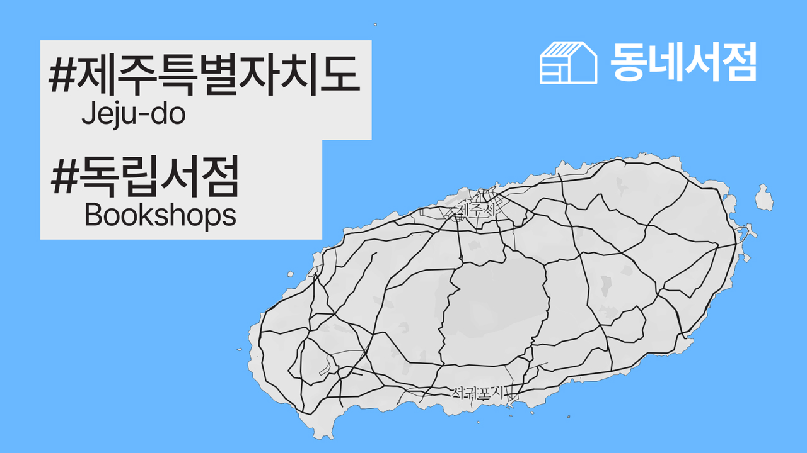
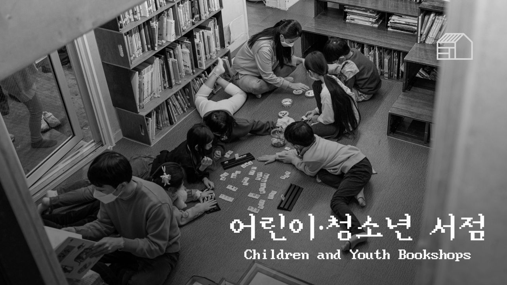

최신 테마 지도


테마 지도
-
여행자의 동네서점지도 2017
떠나볼까, 여행자의 동네서점으로 동네서점을 만나는 즐거움을 더 많은 사람과 나누기 위해 기획자, 작가, 디자이너가 프로젝트팀을 꾸렸다. 함께 동네서점 여행 가이드북 ‘여행자의 동네서점’을 만들었다. 그 후 1년이 지났다. 그동안 문 닫은 서점도, 이사한 서점도, 새로 문 연 서점도 있다. 신촌의 동네서점 지도를 새로 추가해 여행자의 시선으로 동네서점이라는 작은 점과 점을 7개의 선으로 엮었다. 다시 돌아온 「여행자의 동네서점 개정판」은 서울 7개 동네에 커뮤니티를 만들고, 자신의 정체성을 키워나가는 23곳의 동네서점과 이웃 문화 공간 5곳을 함께 소개한다.
-

고민길 데이트지도오늘 데이트는 어디에서 하지? 고민인 당신, 데이트에 딱 좋은 분위기를 맞춘 독립서점을 만나보자. 카페, 술, 반려동물 등 서로의
-

무인운영Unmanned Operation 코로나19 팬데믹을 계기로 확산한 비대면 소비 트렌드로서, 고객이 자유롭게 책을 고르고 결제까지 스스로 한다. 책방지기가 상주하지 않아, 손님들이 부담 없이 조용히 머물며 상품을 고를 수 있다는 장점이 있다.
-
 제주특별자치도
제주특별자치도Jeju-do Bookshops 제주특별자치도에 있는 독립서점 지도입니다. 아래에서 동네서점지도 등록 운영 중 제주의 모든 동네서점을 지금 발견해보세요.
-
 고양이가 사는 책방
고양이가 사는 책방'세계 고양이의 날(International Cat Day)'을 기념해 가볼 만한 고양이를 주제로 하거나, 고양이 책방지기를 만날 수 있는 동네서점을 소개합니다. 세계 고양이의 날은 양력 8월 8일입니다.
-
 어린이청소년서점
어린이청소년서점5월은 '가정의 달'입니다. 5일 어린이날부터 8일 어버이날, 15일 스승의 날, 16일 성년의 날, 21일 부부의 날까지.. 5월에는 가족과 이웃에 대한 존중과 사랑을 베풀어 보면 어떨까요?